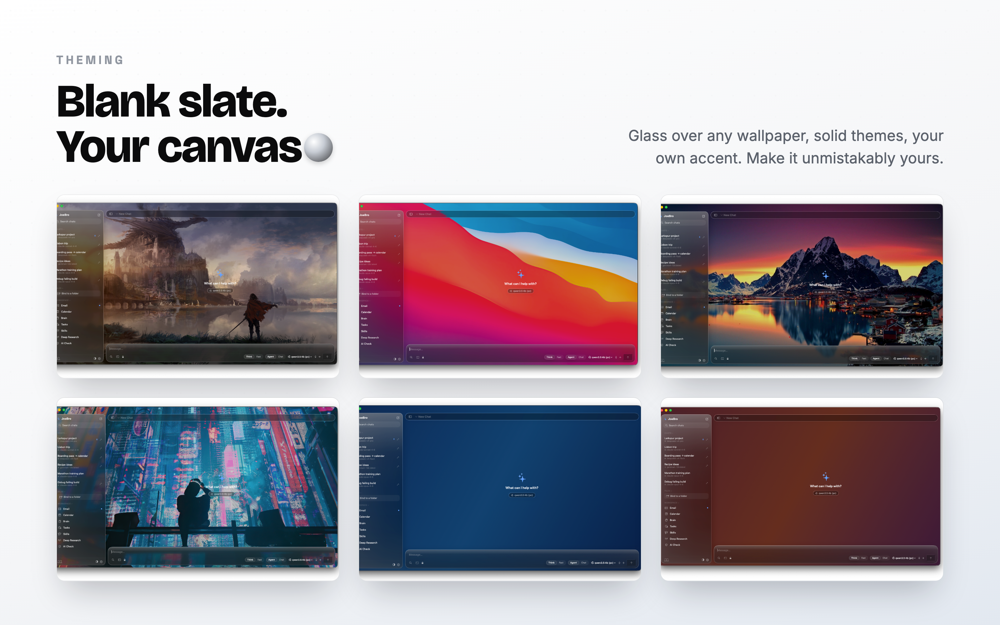

I’m Joe, creator of JoeBro and JoeBro Mobile. I built the Mac app as a place for chats, documents, memory and tools. The useful privacy question is not simply whether an app is local; it is which component handles each piece of data.

The Mac keeps the workspace
In the public 1.3 release, a Python standard-library backend ships inside the native SwiftUI app and starts with it. The Mac client connects to that backend over 127.0.0.1. JoeBro stores chats, memory, tasks and documents in local app data on the Mac; there is no JoeBro account service in the middle.
That describes storage and the app’s local backend. It does not decide where inference happens. JoeBro does not bundle a model. With Ollama, a prompt goes to the Ollama endpoint you configure, whether that is on the Mac or another machine on your network. With a hosted API, relevant prompt content goes to that provider for processing. You bring the key and are responsible for the provider’s terms and charges.
What Cloak Mode changes
Cloak Mode is enabled by default and replaces detected values such as API keys, passwords, email addresses and account numbers with placeholders before a request is sent. This can reduce exposure of those values. It is not a promise that every sensitive detail will be detected, and it does not remove the rest of the prompt. A hosted model request remains a hosted request.
The phone pairs to the Mac
JoeBro Mobile is a source build, not an App Store download. In the documented setup, enable Let my phone connect in the Mac’s Mobile settings, then pair by scanning the QR code. Requests use a token; the iPhone stores it in Keychain. Rotating the token invalidates existing pairings.
For access away from home, the README recommends Tailscale. Local Wi-Fi is another option, with the corresponding network exposure if someone obtains the token. The setup guide says not to expose the phone listener through public port forwarding. The Mac app must remain open and awake for the documented phone connection to work.
The companion requires iOS 17 or later and Xcode. A free Apple ID is enough to build to your own phone; optional push notifications need a paid Apple Developer account and your APNs key. There is no App Store build.
Fit and limits
The documented Mac install requires an Apple Silicon Mac on macOS 26 or later. It is a hands-on choice for someone comfortable choosing a model endpoint and, if desired, pairing a phone. It is less suitable if you want an App Store install or a phone service that works while the Mac is asleep.
I also run a personal Raspberry Pi setup, but it is not the documented standalone install. There is no supported Pi or Docker guide today. I describe that separately as my own deployment rather than a feature visitors can expect to install from the README.
What “sovereign” means to me
It means I can inspect and manage the workspace on hardware I control and choose where inference is sent. That control comes with choices: device access, model provider, network reachability and maintenance. It is not an automatic privacy guarantee, and local inference has its own hardware and electricity costs.
Read the source and current setup notes
JoeBro is GPLv3 software. The READMEs describe the supported release path and current requirements; check them before installing.